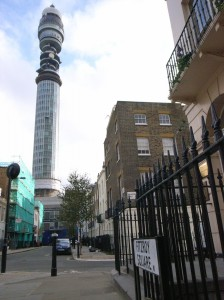

Our annual walk around a particular ‘quarter’ of London took place on 21 October. This time we went to Fitzrovia, which ‘runs north of Oxford Street – and who can blame it?’ (Len Deighton). As always, the occasion was convened by Robert Bradbrook, who plotted our itinerary. We stopped at some renowned spots – the Post Office Tower, the Middlesex Hospital (now demolished), and Newman Passage – as well as places with more personal memories (the site of the old Schmidt’s restaurant in Charlotte Street and the now defunct Agra restaurant in Whitfield Street). We ran out of time for the western leg of the journey, and ended the evening with a meal in the Spaghetti House on Goodge Street – opened in 1955 and still in the ownership of the families who set it up.
